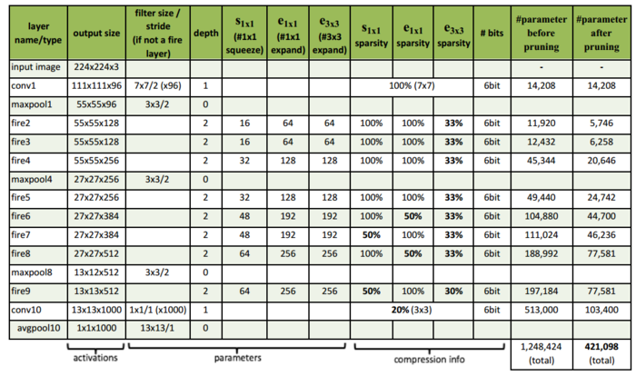
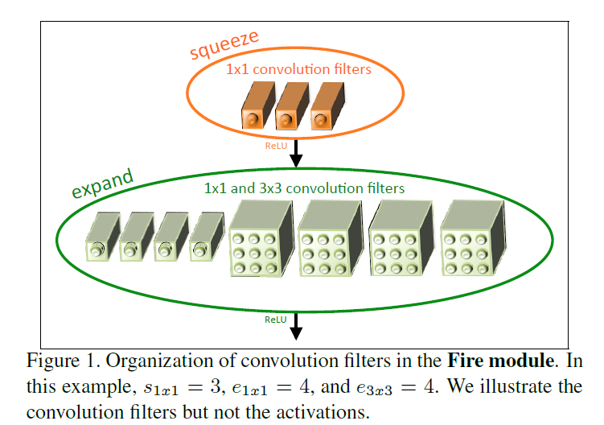
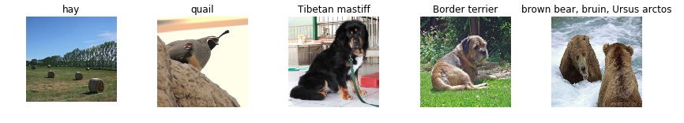
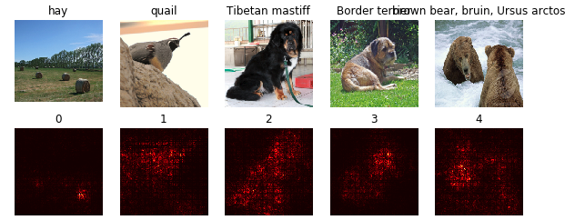
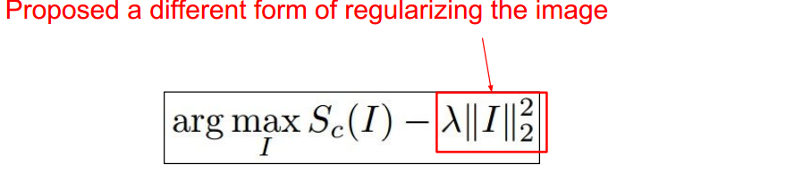
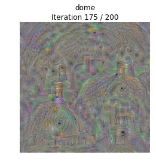
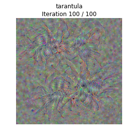

cnn可视化与理解(2)—cnn网络认为世界是什么样子的
2016-11-21
前言
在上一篇cnn卷积网络每一层是怎么工作的中我们看了cnn每一层在找什么，除此之外还有几种方法可以帮助我们更好的理解网络，包括网络对图像的哪部分更敏感,你训练出来的网络所认为的人或者其他事物是什么样子的等。
本文是在cs321n练习NetworkVisualization基础上的讲解,更多内容可以看CS231N和git上的代码实现
网络模型
网络模型使用SqueezeNet,作者是UC Berkeley等人,它的架构如下图:  该模型只有AlexNet五十分之一的参数，却达到了同样的精度，最核心的改变是FireModule:  其实就是把一层的卷积变成2层,第一层是1x1的卷积S11，之后是1x1和3x3卷积，记为e11和e33，最后把e11和e33拼接起来，python代码如下:
def fire_module(x,inp,sp,e11p,e33p):
with tf.variable_scope("fire"):
with tf.variable_scope("squeeze"):
W = tf.get_variable("weights",shape=[1,1,inp,sp])
b = tf.get_variable("bias",shape=[sp])
s = tf.nn.conv2d(x,W,[1,1,1,1],"VALID")+b
s = tf.nn.relu(s)
with tf.variable_scope("e11"):
W = tf.get_variable("weights",shape=[1,1,sp,e11p])
b = tf.get_variable("bias",shape=[e11p])
e11 = tf.nn.conv2d(s,W,[1,1,1,1],"VALID")+b
e11 = tf.nn.relu(e11)
with tf.variable_scope("e33"):
W = tf.get_variable("weights",shape=[3,3,sp,e33p])
b = tf.get_variable("bias",shape=[e33p])
e33 = tf.nn.conv2d(s,W,[1,1,1,1],"SAME")+b
e33 = tf.nn.relu(e33)
return tf.concat([e11,e33],3)
具体的其他细节可以直接点击查看论文.
1. 准备工作
1.1 首先导入需要lib
from __future__ import print_function
import time, os, json
import numpy as np
import matplotlib.pyplot as plt
import tensorflow as tf
from cs231n.classifiers.squeezenet import SqueezeNet
from cs231n.data_utils import load_tiny_imagenet
from cs231n.image_utils import preprocess_image, deprocess_image
from cs231n.image_utils import SQUEEZENET_MEAN, SQUEEZENET_STD
%matplotlib inline
plt.rcParams['figure.figsize'] = (10.0, 8.0) # set default size of plots
plt.rcParams['image.interpolation'] = 'nearest'
plt.rcParams['image.cmap'] = 'gray'
def get_session():
"""Create a session that dynamically allocates memory."""
config = tf.ConfigProto()
config.gpu_options.allow_growth = True
session = tf.Session(config=config)
return session
%load_ext autoreload
%autoreload 2
1.2 下载训练好的squeezenet模型数据也就是weight,导入模型
tf.reset_default_graph()
sess = get_session()
SAVE_PATH = 'cs231n/datasets/squeezenet.ckpt'
model = SqueezeNet(save_path=SAVE_PATH, sess=sess)
1.3 导入图片
from cs231n.data_utils import load_imagenet_val
X_raw, y, class_names = load_imagenet_val(num=5)
plt.figure(figsize=(12, 6))
for i in range(5):
plt.subplot(1, 5, i + 1)
plt.imshow(X_raw[i])
plt.title(class_names[y[i]])
plt.axis('off')
plt.gcf().tight_layout()

1.4 对图片做预处理,图片像素值减去均值再除以方差
X = np.array([preprocess_image(img) for img in X_raw])
2. Saliency Maps
我们想知道图像的哪部分对分类任务的影响更大，更准确说是哪些像素对最后的score得分影响更大,方法是计算正确的得分相对于图像每个像素的梯度:
def compute_saliency_maps(X, y, model):
saliency = None
#计算输入图像的正确分类的得分
correct_scores = tf.gather_nd(model.classifier,
tf.stack((tf.range(X.shape[0]), model.labels), axis=1))
#计算得分相对于图像每个像素的梯度值
grads = tf.gradients(correct_scores,model.image)
grads = grads[0]
#对梯度值取绝对值，便于观察
grads = tf.abs(grads)
#grads的shape=[H,W,3]，只取3个中的最大值，便于观察
grads = tf.reduce_max(grads,axis=3)
saliency = sess.run(grads,feed_dict={model.labels:y,model.image:X})
return saliency
运行计算:
def show_saliency_maps(X, y, mask):
mask = np.asarray(mask)
Xm = X[mask]
ym = y[mask]
saliency = compute_saliency_maps(Xm, ym, model)
for i in range(mask.size):
plt.subplot(2, mask.size, i + 1)
plt.imshow(deprocess_image(Xm[i]))
plt.axis('off')
plt.title(class_names[ym[i]])
plt.subplot(2, mask.size, mask.size + i + 1)
plt.title(mask[i])
plt.imshow(saliency[i], cmap=plt.cm.hot)
plt.axis('off')
plt.gcf().set_size_inches(10, 4)
plt.show()
mask = np.arange(5)
show_saliency_maps(X, y, mask)
结果如下:  颜色越亮表示对最终结果影响越大,可以看出鹌鹑的头部分，狗的头部和毛发，都对分类的最终影响很大
3. Class visualization卷积网络认为的物体是什么样的
我们知道输入一个图片后，在最后一层会给出分值，以此判断图片的分类。如果我们有一个图片，可以把某个分类的得分达到最高，就能观察到该网络所认为的理想的这个分类是什么样的,这是很有趣的尝试,而且能得出漂亮的结果.方法就是我们先随机初始化一个图片，然后与之前相反使用梯度增加的方法，让该图片最终可以最大化我们指定的一个分类,最终生成的图片就是我们要的结果，数学表示是: 
3.1 定义模糊函数,使用高斯滤波随机初始化图片:
from scipy.ndimage.filters import gaussian_filter1d
def blur_image(X, sigma=1):
X = gaussian_filter1d(X, sigma, axis=1)
X = gaussian_filter1d(X, sigma, axis=2)
return X
3.2 生成最大化指定分类分值的图片:
def create_class_visualization(target_y, model, **kwargs):
#从kwargs参数中取出我们需要的值
l2_reg = kwargs.pop('l2_reg', 1e-3) #l2正则化数值，默认1e-3
learning_rate = kwargs.pop('learning_rate', 25) #学习率 默认25
num_iterations = kwargs.pop('num_iterations', 200)#迭代次数，默认200
blur_every = kwargs.pop('blur_every', 10) #每10迭代后使用高斯模糊
max_jitter = kwargs.pop('max_jitter', 16) #最大抖动范围
show_every = kwargs.pop('show_every', 25) #每25次迭代后显示下图片
#随机初始化图片
X = 255 * np.random.rand(224, 224, 3)
X = preprocess_image(X)[None]
#取出我们指定的正确分类
target_ph = model.classifier[:,target_y]
#正则化
regulation = l2_reg *tf.pow(tf.norm(model.image) ,2)
#计算损失,使用损失计算相应的梯度
loss = target_ph - regulation # scalar loss
grad = tf.gradients(loss,model.image)[0] # gradient of loss with respect to model.image, same size as model.image
#循环迭代
for t in range(num_iterations):
#随机抖动图片，这样会让图片更平滑，结果更漂亮
ox, oy = np.random.randint(-max_jitter, max_jitter+1, 2)
Xi = X.copy()
X = np.roll(np.roll(X, ox, 1), oy, 2)
#计算梯度，并使用梯度增加
dgrad = sess.run(grad,feed_dict={model.image:X})
X += dgrad
#反向抖动图片
X = np.roll(np.roll(X, -ox, 1), -oy, 2)
#裁剪，并对图片做高斯模糊
X = np.clip(X, -SQUEEZENET_MEAN/SQUEEZENET_STD, (1.0 - SQUEEZENET_MEAN)/SQUEEZENET_STD)
if t % blur_every == 0:
X = blur_image(X, sigma=0.5)
#显示图片效果
if t == 0 or (t + 1) % show_every == 0 or t == num_iterations - 1:
plt.imshow(deprocess_image(X[0]))
class_name = class_names[target_y]
plt.title('%s\nIteration %d / %d' % (class_name, t + 1, num_iterations))
plt.gcf().set_size_inches(4, 4)
plt.axis('off')
plt.show()
return X
3.3 我们随便选择一个类别，运行查看结果:
target_y = np.random.randint(1000)
X = create_class_visualization(target_y, model)
 这是神经网络所认为的屋顶,可以看出屋顶的大概结构，但是跟现实的屋顶很显然不太一样，可以认为这是各种屋顶的概念的总和.  狼蛛，仍然是所有trainset中狼蛛图片的概念总和.
4. 总结
还有一些方法，例如对输入图片进行部分遮挡以观察最后一层得分变化，fooling image，feature inversion等，都可以让我们进一步理解我们训练好的神经网络到底在做什么，具有什么性质；而且利用这些方法可以生成有趣的图片，比如deepDream,style transfer等。
更重要的是这些方法告诉我们神经网络不是不可解释，不是神秘的,虽然现在还没有严格的数学证明，但是它的理论基础是完善的，或者说可控的.
除此之外，理解这些中间层，对我们设计网络架构是非常有帮助的，我会在下一篇文章中进行阐述.